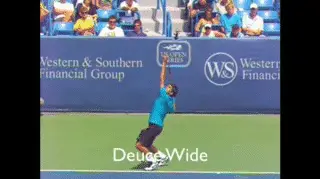
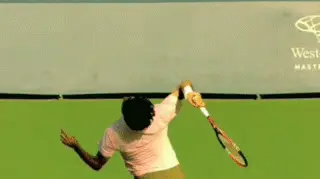
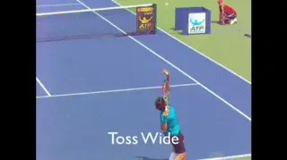
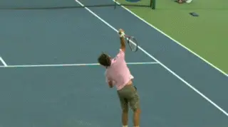
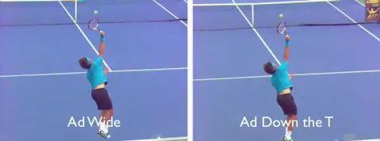
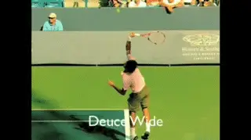
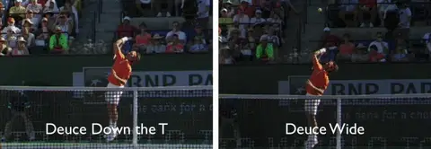
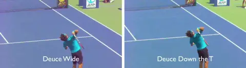

Federer Serve Locations: 1st Serve Deuce¶
John Yandell¶

Even watching slow motion, the technical differences in serve placements in the deuce court seem invisible.
In a previous article we looked at how Roger Federer varied his upward swing in the ad court to produce serves wide and down the T. (link.)
Now let's turn to the same issue in the other box. What are the differences in the motion to serve the corners of the deuce court?
When we looked at the ad court, we saw that were slight differences in the timing of the rotation of the arm and racket. On both serves this rotation was massive, with the arm and racket rotating counterclockwise and turning over around 180 degrees.
This rotation was driven by the forward, internal rotation of the upper arm in the shoulder joint. As the elbow straightened the hand, arm, and racket continued to rotate as a unit.
If you watch the bottom edge of the racket, you can see that it turns over roughly 90 degrees as it moves to the contact and then roughly another 90 degrees as it moves out in the followthrough finishing on edge with the court. (For more detail on how this works, link.)

Watch the rotation of the upper arm drive the swing and the 180 rotation of the racket head.
This rotation is the driving force in all high level serves. The difference in creating the placements is the timing of this rotation. In the ad court, the rotation started fractionally earlier on the wide serve and slightly later on the serve down the T.
This affects when the rotation is completed as well. The racket turns over more quickly on the wide serve with the edge of the racket reaching perpendicular to the court a fraction of a second sooner than on the serve to the T.
In addition, the overall amount of this rotation is usually slightly more on the wide serve in the ad court. On many serves the edge turned and slightly more than 180 degrees, or past perpendicular to the court.
So What?
So what about the deuce court? It's a similar explanation---the key is understanding the timing of the rotation. But it requires close analysis of high speed video to determine because the differences are measured in hundredths of a second.
And without the incredible high speed video resources on TPA, understanding these ultra high speed movements would be impossible. Our team has spent years developing the archival resources to make this possible, resources available literally nowhere else in the world.

The wide serve and and serve down the T are hit off the same toss location.
Sometimes I tend to take what we've created a little for granted. But not when I puzzle over an issue as subtle as placement control in pro serving.
Before we go into what the high speed video actually shows, let's look at two alternative explanations that are widespread in teaching. Both are inaccurate and usually lead to critical losses in speed, spin, and disguise.
The first idea is that to hit the corners in the deuce box you need to use different toss placements. The claim is that the toss for the wide serve should be significantly further to the player's right.
One obvious problem is that significant, observable differences in the toss will telegraph the serve. But that's the least of the problems tossing to the far right causes on the wide serve.
Tossing to the right limits a player's ability to execute the fundamental arm and racket rotation that generates racket speed in the first place. With this ball position at contact the server can't turn the racket over nearly as fully.
The result is players tend to make contact closer with the racket moving too much across the ball and not enough outward and through. This can produce side spin, but at the expense of velocity, topspin, and again, disguise.
Great servers are able to produce placements off the same toss location. The contact point for the wide and the T serve is the same: to the left or inside the hitting hand with the racket tip beveled back to the left.

The racket head doesn't "carve" the ball on the slice serve---it turns in the opposite direction.
The second idea--often taught in conjunction with the right toss placement-- is that to hit the wide serve, the racket face should "carve" around the side of the ball. The idea is that the racket somehow moves around the outside of the ball in the split second of the contact.
In the 4 milliseconds or less that the ball is on the strings, moving the racket around the ball is impossible. As with the toss to the far right, players who try this do this tend to make contact going too much across the ball.
Watch the bottom edge of the frame in the video animation of a Federer wide serve. The racket head is actually turning counterclockwise---precisely the opposite direction it would move in the so-called carving motion.
In the age of high speed video it may seem incredible, but you can actually pay hundreds of dollars to internet coaches who will tell you that carving the ball is the key to a slice serve. The reality is that it reduces or even destroys the biomechanics of a sound serving motion.

In the ad court, the racket head turns sooner and slightly further on the wide serve. The rotation starts later on the T serve and turns slightly less.
The Same Principle
So what's the real explanation? The principle is the same as in the ad court. The key to hitting the corners is slight differences in the timing and amount of arm and racket rotation.
On the T serve, the arm and racket rotation starts sooner and continues slightly further.
On the wide serve rotation starts fractionally later, turns over later. The total rotation is also sometimes slightly less.
The result of these differences in timing is a difference of a few degrees in the angle of the racket face at contact. Those few degrees are the difference between a serve to one corner and a serve to the other.

Changes in the arm and racket rotation produce differences in the racket head angle at contact.
These differences also control the balance between the types of spin. The wide serve will have a slightly higher sidespin component. The T serve will tend to have more topspin.
Research has demonstrated that all high level serves are hit with a mixture of sidespin and topspin. (link.) There is no such thing as a purely "slice" or "topspin" serve.
[The majority of spin on all serves is sidespin, with a varying, much smaller topspin component.]
But the racket path that produces the wide serve placement changes this balance and produces a higher sidespin component. In the serve down the T, the slight differences in the swing result in a slightly more topspin although the great players can vary the exact amounts as well as the placement.
As with ad court, all these differences happen in literally a few hundredths of a second. This is why there is so much misunderstanding of what happens and why. Detecting them even in high speed video is difficult--a matter of a few frames before and after the contact.
Yet if we look frame by frame, we can see clear differences. Watch how the racket face turns to the ball slightly sooner on the serve down the T.
At the moment the racket had has turned about halfway to the ball on the T serve. the racket face on the wide serve is still almost on edge, barely starting to rotate.

In the deuce court, the racket head starts to turn and also rotates further sooner in the T serve compared to the serve wide.
Now look at the difference after the contact. In the serve down the T the racket head has turns over and is on edge to the court much sooner.
At the same point in the wide serve, the racket head has rotated only about half as far with the face still pointing downward to the court.
But look at the finishes! In both cases the racket hand has swept across the body and crossed in front of the left leg. The finish gives no real indication of the placement differences or the differences in the timing of the hand and arm rotation.
Rear View
As with the front view, when we look from the rear we can definitely see the differences in the timing of rotation of the arm and racket. But from this view we can see something else distinguishing the swings.
This is the path of the swing. In both cases the arm and racket are traveling on a diagonal from the player's left to the player's right.
But the swing on the wide serve is more directly forward and toward the net. The swing on the serve to the T travels on an angle further to the right.

On the wide serve the arm travels more forward. On the serve down the T the arm travels further to the right.
You can see this by comparing the angle of the arm to the line of Federer's torso. The angle on the wide serve is something like 30 degrees.
The angle of the arm to the torso on the wide serve is greater, maybe 45%. Whatever the actual measurement, the difference is relatively slight but still apparent.
Usually the rotation is around 180 degrees on both placements. This is critical for maximizing speed and spin on both placements.
In this particular rear view we can also see that the total arm and racket rotation on the T serve is greater turning over slightly more. If we look at multiple examples that isn't always the case.
So what does that mean for the average player trying to develop control of his placements and spins? There are several possible keys to experiment with.
One is to actually try to affect the time of the arm and racket rotation . This means turning the hand sooner to hit down the T or turning slightly later to hit wide.
A second idea is to visualize the slight differences in the racket head angle at contact. A third is to visualize the angle of the arm going outward and forward across the baseline.
The key in all these cases is to maintain the way the arm and racket turn over. These means never holding back on the rotation in the swing.
I'll have more to say about all in my series in Teaching Systems on building the serve, including a series of drills and drill games for developing placements and spin. But next we'll look at two final placement and spin combinations.
Those are the kick serves in the deuce and ad court---what they have in common and how they differ. Stay tuned for that!

John Yandell is widely acknowledged as one of the leading videographers and students of the modern game of professional tennis. His high speed filming for Advanced Tennis and TPA have provided new visual resources that have changed the way the game is studied and understood by both players and coaches. He has done personal video analysis for hundreds of high level competitive players, including Justine Henin-Hardenne, Taylor Dent and John McEnroe, among others.
In addition to his role as Editor of TPA he is the author of the critically acclaimed book Visual Tennis. The John Yandell Tennis School is located in San Francisco, California.